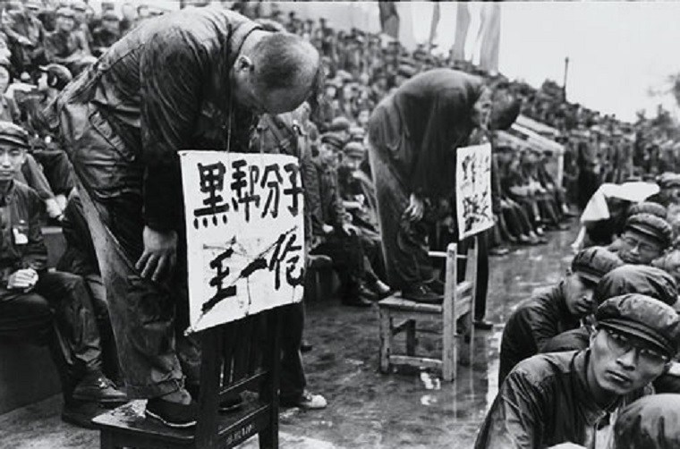
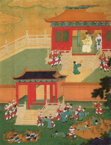
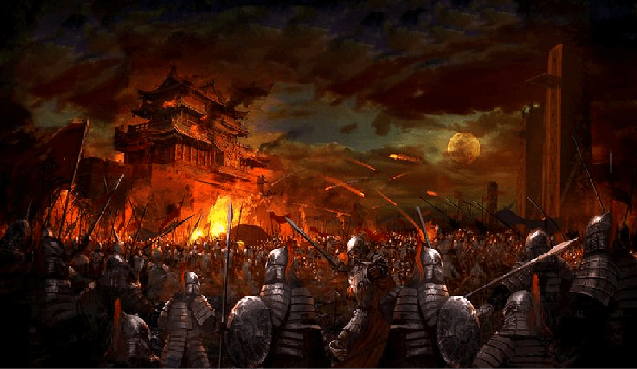

Censura
"Es la intervención que practica el censor en el contenido o en la forma de una obra, atendiendo a razones ideológicas, morales o políticas"
.gif)
Se considera como supresión de material de comunicación que puede ser considerado:
La palabra «censura»
Proviene de la palabra latina censor, el trabajo de dos romanos cuyo deber consistía en supervisar el comportamiento del público y la moral, por lo tanto, censuraban la forma de actuar.
Primer caso de censura
Quema de libros y persecucion intelectual en China
Según las Memorias históricas, después que Qin Shi Huangdi, el primer emperador de China, unificara el país en el año 221 antes de Cristo, su canciller Li Si sugirió suprimir el discurso intelectual con el fin de unificar todos los pensamientos y las opiniones políticas. La justificación era que los intelectuales cantaban falsas alabanzas y hacían crecer la disidencia mediante la difamación.
A partir de 213 a.C, todas las obras clásicas de las Cien escuelas del pensamiento, excepto las de la propia escuela de Li, estuvieron sujetas a la quema de libros. Qin Shi Huang atacó a las otras escuelas de pensamiento por temor a que socavaran su legitimidad, y escribió sus propios libros de historia. Li Si dispuso que todas las historias en los archivos imperiales, excepto las escritas por los historiadores Qin, fueran quemadas; que los textos Clásicos de poesía, historia, y los trabajos de los estudiosos de las diferentes escuelas se entregaran a las autoridades locales para que fueran quemadas; que cualquier persona que se refiriera a alguno de estos dos libros en particular fuera ejecutada; que aquellos que utilizaran antiguos ejemplos para satirizar la política contemporánea, fueran condenados a muerte junto con sus familias; que las autoridades que no denunciaran los casos que llegaran a su conocimiento serían igualmente culpables; y que aquellos que no hubieran quemado los libros y textos señalados dentro de los 30 días fijados serían expulsados hacia el norte como convictos para trabajar en la construcción de la Gran Muralla. Los únicos libros que se salvaron de la destrucción fueron libros sobre la guerra, la medicina, la agricultura y la adivinación.
Qin Shi Huangdi ordenó que más de 460 eruditos de la capital fueran enterrados vivos en el segundo año de la prohibición, mientras que Wei Lan Jiao en el siglo segundo añade 700 más al número total de ejecutados. Como algunos de ellos también eran intelectuales confucianos, su hijo Fusu le aconsejó que esta podía ser una medida drástica que podía causar inestabilidad al afectar a aquellos que respetaban a Confucio en una situación de reciente unificación del país y con enemigos aún no pacificados.
Entre estas escuelas se encontraba el taoísmo de Lao Tsé (siglo VI a. C.), el moísmo de Mozi (470 – 391 a. C.) o el confucionismo de Confucio (551 – 479 a. C.) entre muchas disciplinas.
Afortunadamente no consiguió del todo su objetivo, pues tras la muerte de Qin Shi Huang, su dinastía se desmoronó pronto, dando paso a los Han (206 a. C. – 220 d. C.), que volvieron a restablecer muchas de las costumbres y rituales prohibidos por la anterior dinastía. Colocando además, al confucionismo como piedra angular.
En esta época vivió Sima Qian (145 – 90 a. C.), el Herodoto chino, quién a lo largo de su vida se dedicó a continuar la labor de su padre recogiendo toda la historia de China desde el comienzo, desde los hechos narrados en el Clásico de la Historia hasta la propia época del autor, en la obra llamada Memorias Históricas.
También se cuenta que en la famosa tumba del Primer Emperador se guarda un ejemplar de todos aquellos libros que mandó quemar. Esta tumba solo está explorada en parte, es el enterramiento donde se encuentra el ejército de terracota en Xi’an, compuesto por más de 8000 figuras. Pero la propia localización del emperador se encuentra bajo una montaña que está sin excavar, debido a las dificultades que presenta para los arqueólogos.
Posteriormente, los historiadores confucionistas condenaron al emperador Chin Shih-huang de haber quemado los clásicos y enterrado vivos a estudiosos confucianos. Poco después, compilaron la lista de los "Diez crímenes de Chin" para destacar sus acciones tiránicas. Chia Yi (Jia Yi, 賈誼,; 201 – 169 a.C.), famoso poeta y estadista de la dinastía Han, concluyó su ensayo Las faltas de Chin (過秦論) con un argumento que se convertiría en el juicio habitual confuciano de las razones del colapso de la dinastía de más corta duración en China. El ensayo de Chia Yi, admirado como una obra maestra de la retórica y el razonamiento, fue copiado dentro de los dos principales compendios de historia de la dinastía Han y ha tenido una influencia de un gran alcance en el pensamiento político chino como una ilustración clásica de la teoría confucionista.
